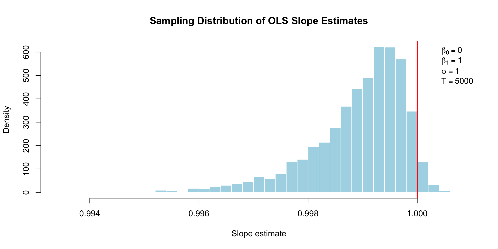
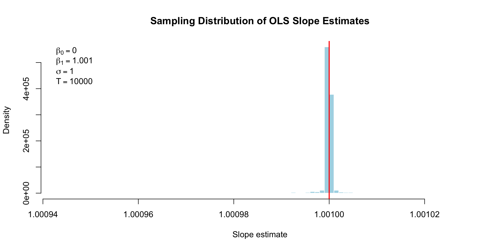
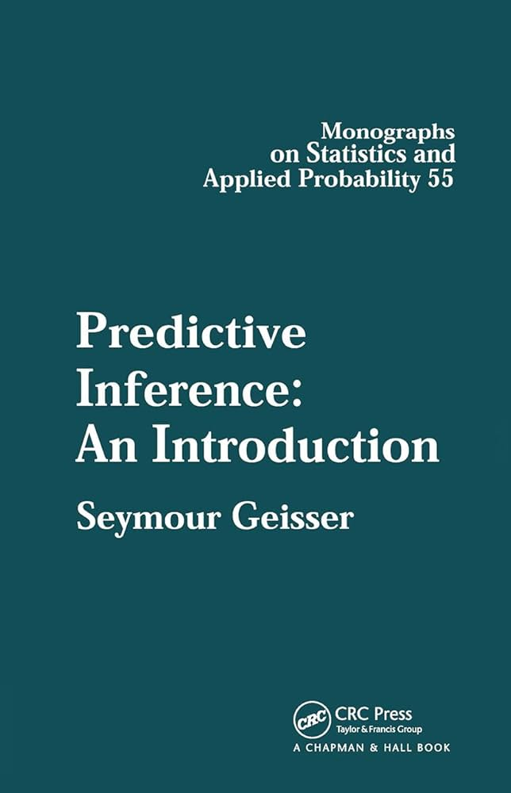
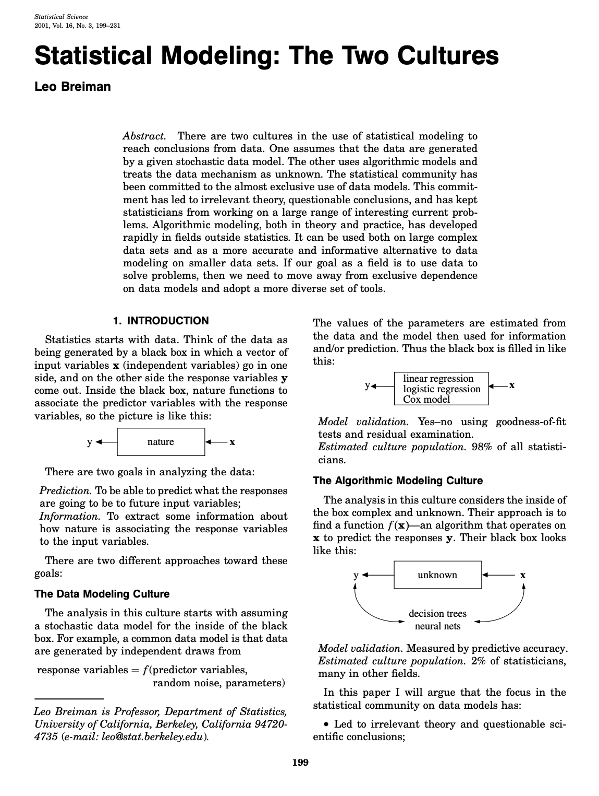

So \(-1< \beta_1< 1\) is the lag-1 autocorrelation, and \(\hat{\beta}_1\) is the sample version.
Asymptotics
Shumway and Stoffer (2025) Property 3.7
For a stationary AR(1), the Yuke-Walker estimator has:
\[
\sqrt{T}(\hat{\beta}_1-\beta_1)\cd\N\left(0\com\frac{\sigma^2}{\gamma(0)}\right).
\] And note in this case that \(\sigma^2 / \gamma(0)=1-\beta_1^2\). The result remains true if you plug in the estimator of the asymptotic variance.
This implies a joint distribution governed by a finite set of static parameters \(\Btheta = \begin{bmatrix}\beta_0&\beta_1&\sigma^2\end{bmatrix}^\tr\):
It doesn’t matter that there’s time series dependence. Once the data are observed and fixed, everything you know about iid multiple regression applies unmodified.
When we graduate to the AR(p) in a few weeks, everything looks identical. \(\BX_T\) just has more columns.
If the data are streaming, apply PSET 0!
Do not recompute that matrix inverse every period.
Later in the semester, we will study something called the Kalman filter;
This is the beating heart of time series analysis in my humble opinion;
If you invest in understanding the recursive form of OLS and the Bayesian version we will see later today, you are well equipped to understand the Kalman filter;
Once you understand the Kalman filter, you can understand anything else in time series analysis;
…the parts worth understanding, anyway.
Asymptotics if the truth is stationary
Shumway and Stoffer (2025) Property 3.9
For a stationary AR(1), the MLE/OLS estimator has:
If the true parameters are \(\beta_0=0\) and \(\beta_1=1\), then MLE/OLS estimator has \[
T(\hat{\beta}_1-1)\cd\frac{\frac{1}{2}[W(1)^2-1]-W(1)\int_0^1W(r)\,\dd r}{\int_0^1 W(r)^2\dd r-\left(\int_0^1 W(r)\,\dd r\right)^2},
\]
where \(W\) is a Wiener process (Brownian motion).
Suffice it to say…the asymptotic distribution ain’t Gaussian.
And the convergence rate is worse.
Simulation in the weird RW case

Definitely not Gaussian.
Asymptotics if the truth is RW w/ drift
Hamilton (1994) [17.4.47]
If the true parameters are \(\beta_0\neq 0\) and \(\beta_1=1\), then MLE/OLS estimator has \[
\begin{bmatrix}
T^{1/2}(\hat{\beta}_0-\beta_0)
\\
T^{3/2}(\hat{\beta}_1-1)
\end{bmatrix}
\cd
\N_2
\left(
\Bzero
\com
\sigma^2
\begin{bmatrix}
1 & \beta_0/2\\
\beta_0/2 & \beta_0^2/3
\end{bmatrix}^{-1}
\right)
.
\]
If the true parameters are \(\beta_0= 0\) and \(|\beta_1|>1\) and the errors are normal, then MLE/OLS estimator has \[
\frac{|\beta_1|^T}{\beta_1^2-1}(\hat{\beta}_1-\beta_1)\cd \text{Cauchy}.
\]
Simulation in explosive case

Why am I bothering you with all this?
Here’s the point:
The AR(1) has been very thoroughly studied;
Unlike Yule-Walker, OLS “works” no matter the regime. Recall that relaxing the stationarity requirement was one of our motivations for exploring likelihood-based inference to begin with;
Non-stationarity can make things weird and complicated, but it’s not so bad that we can’t prove theorems. Inference remains possible;
The math is…interesting. See Hamilton (1994) Chapter 17 if you are absolutely dying of curiosity;
Does any of this matter for “real-world” data analysis?
Probably not.
But you know what does matter?
Bayesian inference
Recall
Given a prior distribution \(p(\Btheta)=p(\beta_0\com \beta_1\com \sigma^2)\) on the parameters and an observed time series \(y_{0:T}\), we seek to access the posterior distribution:
Keep doing Bayes however you were doing it, but accept/reject draws of \(\beta_1\) if they are outside \([-1\com 1]\);
This puts the stationarity assumption in its proper place: as something the modeler can choose to adopt or not by incorporating it into their chosen prior.
Asymptotics
We also have theory that says that the posterior distribution concentrates around the “true value” of the AR(1) parameters.
Some parting thoughts
Bayesian inference is inherently recursive!
As new information arrives, the old posterior becomes the new prior, and you just keep applying Bayes’ theorem:
The inherent recursivity of Bayesian inference is most perfectly realized when you have an exponential family model with conjugate priors. As the data stream, you just update sufficient statistics;
If instead you use Markov chain Monte Carlo (MCMC) to approximate the posterior, that’s not recursive;
As new data arrive, you cannot, strictly speaking, recycle the old MCMC draws. You just have to rerun everything from scratch. Gross!
One of our very last topics is sequential Monte Carlo (SMC), an alternative to MCMC that seeks to reclaim the recursive promise of Bayes.
This course has a predictive POV


This course has a predictive POV
We will study specific models and how to estimate them, but this is only a means to an end;
We don’t care about inference per se, and certainly won’t go anywhere near hypothesis testing;
We use estimated models to generate probabilistic predictions;
Once the predictions have been generated, we don’t necessarily care where they came from;
We evaluate them in a largely model-agnostic way, looking at historical performance on real data.